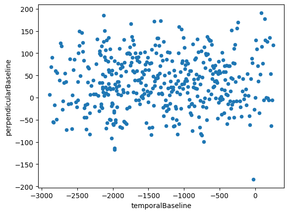
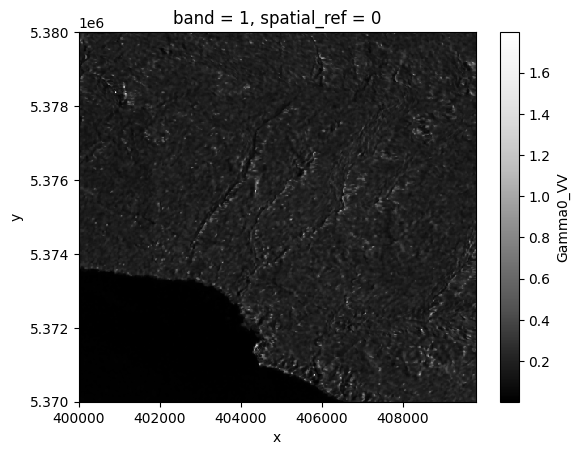
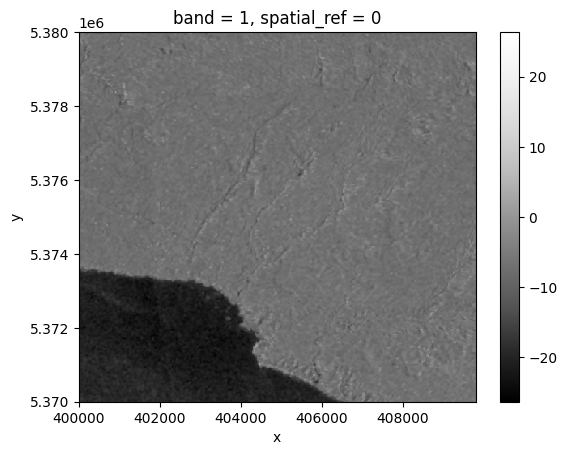

import asf_search as asf
import geopandas as gpd
import matplotlib.pyplot as plt
import numpy as np
import pandas as pdSentinel-1 data in Python
OpenGeoHub Summer School 2023
- Lorena Abad
- 2023-08-31
Querying S1-SLC data
Sentinel-1 data comes at different levels and provides different products. For applications such as measuring deformation due to tectonic or volcanic activity, quantifying ground subsidence or to generate digital elevation models (DEM), interferometric SAR (InSAR) techniques can be used.
To apply such workflows with Sentinel data, we can use Sentinel-1 Level 1 Single Look Complex products.

SM mode is designed to support ERS (European Remote Sensing) and Envisat missions; IW mode is the default mode over land; EW mode is designed for maritime, ice, and polar zone observation services where wide coverage and short revisit times are demanded; and WV mode is the default mode over the open ocean.
So far, very few cloud computing capabilities are available to compute such complex workflows, therefore, there is still a need to download data. Depending on the application, we will need to download data with certain characteristics.

Figure from: Xiong S, Muller J-P, Li G. The Application of ALOS/PALSAR InSAR to Measure Subsurface Penetration Depths in Deserts. Remote Sensing. 2017; 9(6):638. https://doi.org/10.3390/rs9060638
For DEM generation, for example, we would require a pair of Sentinel-1 scenes acquired closely in time and that have a perpendicular baseline between 150 and 300 m. Usually, computing the perpendicular baseline between two images requires the download of the image pairs.
To avoid downloading several unnecessary Sentinel-1 scenes, we can make use of the Alaska Satellite Facility (ASF) geographic and baseline tools to query the data we need via their API.
Libraries needed for this exercise are imported below:
Define extent
We will define an aoi and a start and end date for our queries.
aoi = gpd.read_file("D:/Daten/OpenGeoHub2023/Sentinel Lorena/ogh23/data/poznan.geojson")
aoi.explore()Make this Notebook Trusted to load map: File -> Trust Notebook
footprint = aoi.to_wkt()
date_start = "2022/05/01"
date_end = "2022/10/01"Geographical search
Now we can use the asf_search Python module to perform our geographical search. We specify here the platform and the processing level (SLC) that we are looking for, and we limit the results for this exercise to 10 scenes.
products = asf.geo_search(platform=[asf.PLATFORM.SENTINEL1],
intersectsWith=footprint.geometry[0],
processingLevel=[asf.PRODUCT_TYPE.SLC],
# beamSwath='IW', #Nothing will come for EW, because that would be for the arctic
start=date_start,
end=date_end,
maxResults=10)productsASFSearchResults([<asf_search.ASFProduct.ASFProduct at 0x1b1ed935090>,
<asf_search.ASFProduct.ASFProduct at 0x1b19332d450>,
<asf_search.ASFProduct.ASFProduct at 0x1b19332e7d0>,
<asf_search.ASFProduct.ASFProduct at 0x1b19332ee10>,
<asf_search.ASFProduct.ASFProduct at 0x1b19332f410>,
<asf_search.ASFProduct.ASFProduct at 0x1b19332fa10>,
<asf_search.ASFProduct.ASFProduct at 0x1b19332ff90>,
<asf_search.ASFProduct.ASFProduct at 0x1b193328390>,
<asf_search.ASFProduct.ASFProduct at 0x1b193328950>,
<asf_search.ASFProduct.ASFProduct at 0x1b19332f990>])We can then add the results of the query to a pandas dataframe for easier inspection:
products_df = pd.DataFrame([p.properties for p in products])
products_df| beamModeType | browse | bytes | centerLat | centerLon | faradayRotation | fileID | flightDirection | groupID | granuleType | ... | processingDate | processingLevel | sceneName | sensor | startTime | stopTime | url | pgeVersion | fileName | frameNumber | |
|---|---|---|---|---|---|---|---|---|---|---|---|---|---|---|---|---|---|---|---|---|---|
| 0 | IW | None | 4657751122 | 52.2492 | 17.9661 | None | S1A_IW_SLC__1SDV_20220929T163603_20220929T1636... | ASCENDING | S1A_IWDV_0167_0173_045222_175 | SENTINEL_1A_FRAME | ... | 2022-09-29T16:36:03.000Z | SLC | S1A_IW_SLC__1SDV_20220929T163603_20220929T1636... | C-SAR | 2022-09-29T16:36:03.000Z | 2022-09-29T16:36:30.000Z | https://datapool.asf.alaska.edu/SLC/SA/S1A_IW_... | 003.52 | S1A_IW_SLC__1SDV_20220929T163603_20220929T1636... | 167 |
| 1 | IW | None | 4580763215 | 52.6218 | 18.4544 | None | S1A_IW_SLC__1SDV_20220926T050057_20220926T0501... | DESCENDING | S1A_IWDV_0416_0423_045171_124 | SENTINEL_1A_FRAME | ... | 2022-09-26T05:00:57.000Z | SLC | S1A_IW_SLC__1SDV_20220926T050057_20220926T0501... | C-SAR | 2022-09-26T05:00:57.000Z | 2022-09-26T05:01:24.000Z | https://datapool.asf.alaska.edu/SLC/SA/S1A_IW_... | 003.52 | S1A_IW_SLC__1SDV_20220926T050057_20220926T0501... | 417 |
| 2 | IW | None | 4609579705 | 53.0143 | 15.6840 | None | S1A_IW_SLC__1SDV_20220922T164428_20220922T1644... | ASCENDING | S1A_IWDV_0169_0176_045120_073 | SENTINEL_1A_FRAME | ... | 2022-09-22T16:44:28.000Z | SLC | S1A_IW_SLC__1SDV_20220922T164428_20220922T1644... | C-SAR | 2022-09-22T16:44:28.000Z | 2022-09-22T16:44:56.000Z | https://datapool.asf.alaska.edu/SLC/SA/S1A_IW_... | 003.52 | S1A_IW_SLC__1SDV_20220922T164428_20220922T1644... | 170 |
| 3 | IW | None | 4646654586 | 51.5302 | 16.1188 | None | S1A_IW_SLC__1SDV_20220922T164404_20220922T1644... | ASCENDING | S1A_IWDV_0165_0170_045120_073 | SENTINEL_1A_FRAME | ... | 2022-09-22T16:44:04.000Z | SLC | S1A_IW_SLC__1SDV_20220922T164404_20220922T1644... | C-SAR | 2022-09-22T16:44:04.000Z | 2022-09-22T16:44:31.000Z | https://datapool.asf.alaska.edu/SLC/SA/S1A_IW_... | 003.52 | S1A_IW_SLC__1SDV_20220922T164404_20220922T1644... | 165 |
| 4 | IW | None | 4686861613 | 53.0102 | 16.5167 | None | S1A_IW_SLC__1SDV_20220919T050904_20220919T0509... | DESCENDING | S1A_IWDV_0415_0421_045069_022 | SENTINEL_1A_FRAME | ... | 2022-09-19T05:09:04.000Z | SLC | S1A_IW_SLC__1SDV_20220919T050904_20220919T0509... | C-SAR | 2022-09-19T05:09:04.000Z | 2022-09-19T05:09:31.000Z | https://datapool.asf.alaska.edu/SLC/SA/S1A_IW_... | 003.52 | S1A_IW_SLC__1SDV_20220919T050904_20220919T0509... | 415 |
| 5 | IW | None | 4652270299 | 52.2492 | 17.9662 | None | S1A_IW_SLC__1SDV_20220917T163602_20220917T1636... | ASCENDING | S1A_IWDV_0167_0173_045047_175 | SENTINEL_1A_FRAME | ... | 2022-09-17T16:36:02.000Z | SLC | S1A_IW_SLC__1SDV_20220917T163602_20220917T1636... | C-SAR | 2022-09-17T16:36:02.000Z | 2022-09-17T16:36:30.000Z | https://datapool.asf.alaska.edu/SLC/SA/S1A_IW_... | 003.52 | S1A_IW_SLC__1SDV_20220917T163602_20220917T1636... | 167 |
| 6 | IW | None | 4734573721 | 52.6220 | 18.4523 | None | S1A_IW_SLC__1SDV_20220914T050057_20220914T0501... | DESCENDING | S1A_IWDV_0416_0423_044996_124 | SENTINEL_1A_FRAME | ... | 2022-09-14T05:00:57.000Z | SLC | S1A_IW_SLC__1SDV_20220914T050057_20220914T0501... | C-SAR | 2022-09-14T05:00:57.000Z | 2022-09-14T05:01:24.000Z | https://datapool.asf.alaska.edu/SLC/SA/S1A_IW_... | 003.52 | S1A_IW_SLC__1SDV_20220914T050057_20220914T0501... | 417 |
| 7 | IW | None | 4707081403 | 53.0145 | 15.6814 | None | S1A_IW_SLC__1SDV_20220910T164429_20220910T1644... | ASCENDING | S1A_IWDV_0169_0176_044945_073 | SENTINEL_1A_FRAME | ... | 2022-09-10T16:44:29.000Z | SLC | S1A_IW_SLC__1SDV_20220910T164429_20220910T1644... | C-SAR | 2022-09-10T16:44:29.000Z | 2022-09-10T16:44:56.000Z | https://datapool.asf.alaska.edu/SLC/SA/S1A_IW_... | 003.52 | S1A_IW_SLC__1SDV_20220910T164429_20220910T1644... | 170 |
| 8 | IW | None | 4721237800 | 51.5303 | 16.1161 | None | S1A_IW_SLC__1SDV_20220910T164404_20220910T1644... | ASCENDING | S1A_IWDV_0164_0171_044945_073 | SENTINEL_1A_FRAME | ... | 2022-09-10T16:44:04.000Z | SLC | S1A_IW_SLC__1SDV_20220910T164404_20220910T1644... | C-SAR | 2022-09-10T16:44:04.000Z | 2022-09-10T16:44:32.000Z | https://datapool.asf.alaska.edu/SLC/SA/S1A_IW_... | 003.52 | S1A_IW_SLC__1SDV_20220910T164404_20220910T1644... | 165 |
| 9 | IW | None | 4575317676 | 53.0107 | 16.5132 | None | S1A_IW_SLC__1SDV_20220907T050904_20220907T0509... | DESCENDING | S1A_IWDV_0415_0421_044894_022 | SENTINEL_1A_FRAME | ... | 2022-09-07T05:09:04.000Z | SLC | S1A_IW_SLC__1SDV_20220907T050904_20220907T0509... | C-SAR | 2022-09-07T05:09:04.000Z | 2022-09-07T05:09:31.000Z | https://datapool.asf.alaska.edu/SLC/SA/S1A_IW_... | 003.52 | S1A_IW_SLC__1SDV_20220907T050904_20220907T0509... | 415 |
10 rows × 28 columns
Ascending vs. Descending:  -
- 

Baseline search
Now that we have scenes that intersect with our defined extent, we can do a baseline search that will allow us to fetch all the S1 scenes that pair with the first S1 result from our geographical query. The baseline search returns a set of products with precomputed perpendicular baselines, so that we can focus our download on the data that we need.
stack = products[0].stack()print(f'{len(stack)} products found in stack')446 products found in stackWe can take a look at the data again as a pandas data frame and we will see that the last two columns correspond to the temporal and perpendicular baseline.
stack_df = pd.DataFrame([p.properties for p in stack])
stack_df
# sort_values()| beamModeType | browse | bytes | centerLat | centerLon | faradayRotation | fileID | flightDirection | groupID | granuleType | ... | sceneName | sensor | startTime | stopTime | url | pgeVersion | fileName | frameNumber | temporalBaseline | perpendicularBaseline | |
|---|---|---|---|---|---|---|---|---|---|---|---|---|---|---|---|---|---|---|---|---|---|
| 0 | IW | None | 4619446112 | 52.5775 | 17.8534 | None | S1A_IW_SLC__1SDV_20141029T163519_20141029T1635... | ASCENDING | S1A_IWDV_0168_0173_003047_175 | SENTINEL_1A_FRAME | ... | S1A_IW_SLC__1SDV_20141029T163519_20141029T1635... | C-SAR | 2014-10-29T16:35:19.000Z | 2014-10-29T16:35:46.000Z | https://datapool.asf.alaska.edu/SLC/SA/S1A_IW_... | 002.71 | S1A_IW_SLC__1SDV_20141029T163519_20141029T1635... | 168 | -2892 | 7.0 |
| 1 | IW | None | 4722951640 | 52.5774 | 17.8506 | None | S1A_IW_SLC__1SDV_20141122T163518_20141122T1635... | ASCENDING | S1A_IWDV_0168_0173_003397_175 | SENTINEL_1A_FRAME | ... | S1A_IW_SLC__1SDV_20141122T163518_20141122T1635... | C-SAR | 2014-11-22T16:35:18.000Z | 2014-11-22T16:35:46.000Z | https://datapool.asf.alaska.edu/SLC/SA/S1A_IW_... | 002.71 | S1A_IW_SLC__1SDV_20141122T163518_20141122T1635... | 168 | -2868 | 69.0 |
| 2 | IW | None | 4522111160 | 52.5774 | 17.8509 | None | S1A_IW_SLC__1SDV_20141204T163518_20141204T1635... | ASCENDING | S1A_IWDV_0168_0173_003572_175 | SENTINEL_1A_FRAME | ... | S1A_IW_SLC__1SDV_20141204T163518_20141204T1635... | C-SAR | 2014-12-04T16:35:18.000Z | 2014-12-04T16:35:45.000Z | https://datapool.asf.alaska.edu/SLC/SA/S1A_IW_... | 002.71 | S1A_IW_SLC__1SDV_20141204T163518_20141204T1635... | 168 | -2856 | 90.0 |
| 3 | IW | None | 4728062249 | 52.5777 | 17.8487 | None | S1A_IW_SLC__1SDV_20141216T163518_20141216T1635... | ASCENDING | S1A_IWDV_0168_0173_003747_175 | SENTINEL_1A_FRAME | ... | S1A_IW_SLC__1SDV_20141216T163518_20141216T1635... | C-SAR | 2014-12-16T16:35:18.000Z | 2014-12-16T16:35:45.000Z | https://datapool.asf.alaska.edu/SLC/SA/S1A_IW_... | 002.71 | S1A_IW_SLC__1SDV_20141216T163518_20141216T1635... | 168 | -2844 | -55.0 |
| 4 | IW | None | 4486483588 | 52.5775 | 17.8488 | None | S1A_IW_SLC__1SDV_20141228T163517_20141228T1635... | ASCENDING | S1A_IWDV_0167_0174_003922_175 | SENTINEL_1A_FRAME | ... | S1A_IW_SLC__1SDV_20141228T163517_20141228T1635... | C-SAR | 2014-12-28T16:35:17.000Z | 2014-12-28T16:35:44.000Z | https://datapool.asf.alaska.edu/SLC/SA/S1A_IW_... | 002.71 | S1A_IW_SLC__1SDV_20141228T163517_20141228T1635... | 168 | -2832 | -56.0 |
| ... | ... | ... | ... | ... | ... | ... | ... | ... | ... | ... | ... | ... | ... | ... | ... | ... | ... | ... | ... | ... | ... |
| 441 | IW | None | 4718179946 | 52.2499 | 17.9680 | None | S1A_IW_SLC__1SDV_20230702T163603_20230702T1636... | ASCENDING | S1A_IWDV_0167_0173_049247_175 | SENTINEL_1A_FRAME | ... | S1A_IW_SLC__1SDV_20230702T163603_20230702T1636... | C-SAR | 2023-07-02T16:36:03.964Z | 2023-07-02T16:36:31.045Z | https://datapool.asf.alaska.edu/SLC/SA/S1A_IW_... | 003.61 | S1A_IW_SLC__1SDV_20230702T163603_20230702T1636... | 167 | 276 | NaN |
| 442 | IW | None | 4626122112 | 52.2499 | 17.9659 | None | S1A_IW_SLC__1SDV_20230714T163604_20230714T1636... | ASCENDING | S1A_IWDV_0167_0172_049422_175 | SENTINEL_1A_FRAME | ... | S1A_IW_SLC__1SDV_20230714T163604_20230714T1636... | C-SAR | 2023-07-14T16:36:04.988Z | 2023-07-14T16:36:32.070Z | https://datapool.asf.alaska.edu/SLC/SA/S1A_IW_... | 003.61 | S1A_IW_SLC__1SDV_20230714T163604_20230714T1636... | 167 | 288 | NaN |
| 443 | IW | None | 4675450333 | 52.2497 | 17.9655 | None | S1A_IW_SLC__1SDV_20230726T163605_20230726T1636... | ASCENDING | S1A_IWDV_0167_0173_049597_175 | SENTINEL_1A_FRAME | ... | S1A_IW_SLC__1SDV_20230726T163605_20230726T1636... | C-SAR | 2023-07-26T16:36:05.545Z | 2023-07-26T16:36:32.627Z | https://datapool.asf.alaska.edu/SLC/SA/S1A_IW_... | 003.61 | S1A_IW_SLC__1SDV_20230726T163605_20230726T1636... | 167 | 300 | NaN |
| 444 | IW | None | 4713498249 | 52.2496 | 17.9664 | None | S1A_IW_SLC__1SDV_20230807T163606_20230807T1636... | ASCENDING | S1A_IWDV_0167_0173_049772_175 | SENTINEL_1A_FRAME | ... | S1A_IW_SLC__1SDV_20230807T163606_20230807T1636... | C-SAR | 2023-08-07T16:36:06.044Z | 2023-08-07T16:36:33.128Z | https://datapool.asf.alaska.edu/SLC/SA/S1A_IW_... | 003.61 | S1A_IW_SLC__1SDV_20230807T163606_20230807T1636... | 167 | 312 | NaN |
| 445 | IW | None | 4643445782 | 52.2501 | 17.9667 | None | S1A_IW_SLC__1SDV_20230819T163607_20230819T1636... | ASCENDING | S1A_IWDV_0167_0173_049947_175 | SENTINEL_1A_FRAME | ... | S1A_IW_SLC__1SDV_20230819T163607_20230819T1636... | C-SAR | 2023-08-19T16:36:07.038Z | 2023-08-19T16:36:34.120Z | https://datapool.asf.alaska.edu/SLC/SA/S1A_IW_... | 003.61 | S1A_IW_SLC__1SDV_20230819T163607_20230819T1636... | 167 | 324 | NaN |
446 rows × 30 columns
To have an idea of how spread our data is, we can plot the temporal and the perpendicular baselines against each other.
stack_df.plot.scatter(x="temporalBaseline", y="perpendicularBaseline")<Axes: xlabel='temporalBaseline', ylabel='perpendicularBaseline'>
Ideally, we will filter those values where temporalBaseline <= 30 and 150 <= perpendicularBaseline <= 300 for instance to get image pairs suitable for DEM generation. So we can filter our data frame for those values. We look for absolute values since the order of the images is not relevant.
stack_df[(abs(stack_df['temporalBaseline']) <= 30) &
(abs(stack_df['perpendicularBaseline']) >= 150) &
(abs(stack_df['perpendicularBaseline']) <= 300)]| beamModeType | browse | bytes | centerLat | centerLon | faradayRotation | fileID | flightDirection | groupID | granuleType | ... | sceneName | sensor | startTime | stopTime | url | pgeVersion | fileName | frameNumber | temporalBaseline | perpendicularBaseline | |
|---|---|---|---|---|---|---|---|---|---|---|---|---|---|---|---|---|---|---|---|---|---|
| 416 | IW | None | 4563266039 | 52.2489 | 17.9638 | None | S1A_IW_SLC__1SDV_20220905T163603_20220905T1636... | ASCENDING | S1A_IWDV_0167_0173_044872_175 | SENTINEL_1A_FRAME | ... | S1A_IW_SLC__1SDV_20220905T163603_20220905T1636... | C-SAR | 2022-09-05T16:36:03.000Z | 2022-09-05T16:36:30.000Z | https://datapool.asf.alaska.edu/SLC/SA/S1A_IW_... | 003.52 | S1A_IW_SLC__1SDV_20220905T163603_20220905T1636... | 167 | -24 | -184.0 |
1 rows × 30 columns
We only get one image fitting the characteristics we require. Let’s look at its properties:
stack[416].properties{'beamModeType': 'IW',
'browse': None,
'bytes': 4563266039,
'centerLat': 52.2489,
'centerLon': 17.9638,
'faradayRotation': None,
'fileID': 'S1A_IW_SLC__1SDV_20220905T163603_20220905T163630_044872_055BFF_5F88-SLC',
'flightDirection': 'ASCENDING',
'groupID': 'S1A_IWDV_0167_0173_044872_175',
'granuleType': 'SENTINEL_1A_FRAME',
'insarStackId': None,
'md5sum': '72e8baa2456d336cb9b71e2c5f7e93be',
'offNadirAngle': None,
'orbit': 44872,
'pathNumber': 175,
'platform': 'Sentinel-1A',
'pointingAngle': None,
'polarization': 'VV+VH',
'processingDate': '2022-09-05T16:36:03.000Z',
'processingLevel': 'SLC',
'sceneName': 'S1A_IW_SLC__1SDV_20220905T163603_20220905T163630_044872_055BFF_5F88',
'sensor': 'C-SAR',
'startTime': '2022-09-05T16:36:03.000Z',
'stopTime': '2022-09-05T16:36:30.000Z',
'url': 'https://datapool.asf.alaska.edu/SLC/SA/S1A_IW_SLC__1SDV_20220905T163603_20220905T163630_044872_055BFF_5F88.zip',
'pgeVersion': '003.52',
'fileName': 'S1A_IW_SLC__1SDV_20220905T163603_20220905T163630_044872_055BFF_5F88.zip',
'frameNumber': 167,
'temporalBaseline': -24,
'perpendicularBaseline': -184}Let’s also remember this is paired with the original product we calcualted the baselines for.
products[0].properties{'beamModeType': 'IW',
'browse': None,
'bytes': 4657751122,
'centerLat': 52.2492,
'centerLon': 17.9661,
'faradayRotation': None,
'fileID': 'S1A_IW_SLC__1SDV_20220929T163603_20220929T163630_045222_0567B7_46CF-SLC',
'flightDirection': 'ASCENDING',
'groupID': 'S1A_IWDV_0167_0173_045222_175',
'granuleType': 'SENTINEL_1A_FRAME',
'insarStackId': None,
'md5sum': 'a37a41c9155ed7a93b4055066710e224',
'offNadirAngle': None,
'orbit': 45222,
'pathNumber': 175,
'platform': 'Sentinel-1A',
'pointingAngle': None,
'polarization': 'VV+VH',
'processingDate': '2022-09-29T16:36:03.000Z',
'processingLevel': 'SLC',
'sceneName': 'S1A_IW_SLC__1SDV_20220929T163603_20220929T163630_045222_0567B7_46CF',
'sensor': 'C-SAR',
'startTime': '2022-09-29T16:36:03.000Z',
'stopTime': '2022-09-29T16:36:30.000Z',
'url': 'https://datapool.asf.alaska.edu/SLC/SA/S1A_IW_SLC__1SDV_20220929T163603_20220929T163630_045222_0567B7_46CF.zip',
'pgeVersion': '003.52',
'fileName': 'S1A_IW_SLC__1SDV_20220929T163603_20220929T163630_045222_0567B7_46CF.zip',
'frameNumber': 167}Downloading the data
Finally, with the ASF API we can download our data to further analyse it with, e.g. SNAP. To do so we can make use of the url property.
urls = [
products[0].properties['url'],
stack[416].properties['url']
]Once that is set we can use the download_urls() function as speccified below to get our data in a desired directory. To download the data we will need EarthData credentials. This notebook from the ASF describes the authentication process.
asf.download_urls(urls=urls, path='data/s1', session=user_pass_session, processes=5)Exploring S1-RTC data
import matplotlib.pyplot as plt
import numpy as np
import os
import pandas as pd
import rioxarray as rio
import xarray as xrNow let’s take a look at a bit more processed data that we can directly work with. Still in Level-1 you will see the Ground Range Detected (GRD) product in the figure above. This is S1 data that has been further processed (it has been detected, multi-looked and projected to ground range). The SLC products we queried before preserve phase information and are processed at the natural pixel spacing whereas GRD products contain the detected amplitude and are multi-looked to reduce the impact of speckle.
An extra processing step is to perform Radiometric Terrain Correction, and some data providers like Microsoft Planetary Computer make this dataset available worldwide. Feel free to explore the Planetary Computer access options to work on larger datasets if you are interested.
In the spirit to avoid the need for you to get credentials for this particular workshop, we will use a Sentinel-1 RTC dataset for the Contiguous United States (CONUS) which is freely accessible.
We will access this data using the Amazon Web Services (AWS) CLI directly (with the awscli package). Let’s explore the available data:
!aws s3 ls s3://sentinel-s1-rtc-indigo/tiles/RTC/1/ --no-sign-request PRE IW/Dateityp "Python.File" nicht gefunden, oder diesem Dateityp wurde kein ™ffnen-Befehl
zugeordnet.!aws s3 ls s3://sentinel-s1-rtc-indigo/tiles/RTC/1/IW/ --no-sign-request PRE 10/
PRE 11/
PRE 12/
PRE 13/
PRE 14/
PRE 15/
PRE 16/
PRE 17/
PRE 18/
PRE 19/Dateityp "Python.File" nicht gefunden, oder diesem Dateityp wurde kein ™ffnen-Befehl
zugeordnet.!aws s3 ls s3://sentinel-s1-rtc-indigo/tiles/RTC/1/IW/10/S/DH/2016/S1A_20160729_10SDH_ASC/Gamma0_VV.tif/ --no-sign-requestDateityp "Python.File" nicht gefunden, oder diesem Dateityp wurde kein ™ffnen-Befehl
zugeordnet.
Dateityp "Python.File" nicht gefunden, oder diesem Dateityp wurde kein ™ffnen-Befehl
zugeordnet.Completed 256.0 KiB/118.6 MiB (23.9 KiB/s) with 1 file(s) remaining
Completed 512.0 KiB/118.6 MiB (47.2 KiB/s) with 1 file(s) remaining
Completed 768.0 KiB/118.6 MiB (64.7 KiB/s) with 1 file(s) remaining
Completed 1.0 MiB/118.6 MiB (63.2 KiB/s) with 1 file(s) remaining
Completed 1.2 MiB/118.6 MiB (76.5 KiB/s) with 1 file(s) remaining
Completed 1.5 MiB/118.6 MiB (80.8 KiB/s) with 1 file(s) remaining
Completed 1.8 MiB/118.6 MiB (93.9 KiB/s) with 1 file(s) remaining
Completed 2.0 MiB/118.6 MiB (103.4 KiB/s) with 1 file(s) remaining
Completed 2.2 MiB/118.6 MiB (91.3 KiB/s) with 1 file(s) remaining
Completed 2.5 MiB/118.6 MiB (100.7 KiB/s) with 1 file(s) remaining
Completed 2.8 MiB/118.6 MiB (98.9 KiB/s) with 1 file(s) remaining
Completed 3.0 MiB/118.6 MiB (107.9 KiB/s) with 1 file(s) remaining
Completed 3.2 MiB/118.6 MiB (105.7 KiB/s) with 1 file(s) remaining
Completed 3.5 MiB/118.6 MiB (113.7 KiB/s) with 1 file(s) remaining
Completed 3.8 MiB/118.6 MiB (115.9 KiB/s) with 1 file(s) remaining
Completed 4.0 MiB/118.6 MiB (118.4 KiB/s) with 1 file(s) remaining
Completed 4.2 MiB/118.6 MiB (125.0 KiB/s) with 1 file(s) remaining
Completed 4.5 MiB/118.6 MiB (129.9 KiB/s) with 1 file(s) remaining
Completed 4.8 MiB/118.6 MiB (135.1 KiB/s) with 1 file(s) remaining
Completed 5.0 MiB/118.6 MiB (138.3 KiB/s) with 1 file(s) remaining
Completed 5.2 MiB/118.6 MiB (144.9 KiB/s) with 1 file(s) remaining
Completed 5.5 MiB/118.6 MiB (146.9 KiB/s) with 1 file(s) remaining
Completed 5.8 MiB/118.6 MiB (108.1 KiB/s) with 1 file(s) remaining
Completed 6.0 MiB/118.6 MiB (112.3 KiB/s) with 1 file(s) remaining
Completed 6.2 MiB/118.6 MiB (116.5 KiB/s) with 1 file(s) remaining
Completed 6.5 MiB/118.6 MiB (110.8 KiB/s) with 1 file(s) remaining
Completed 6.8 MiB/118.6 MiB (115.1 KiB/s) with 1 file(s) remaining
Completed 7.0 MiB/118.6 MiB (116.7 KiB/s) with 1 file(s) remaining
Completed 7.2 MiB/118.6 MiB (120.5 KiB/s) with 1 file(s) remaining
Completed 7.5 MiB/118.6 MiB (116.7 KiB/s) with 1 file(s) remaining
Completed 7.8 MiB/118.6 MiB (116.4 KiB/s) with 1 file(s) remaining
Completed 8.0 MiB/118.6 MiB (119.3 KiB/s) with 1 file(s) remaining
Completed 8.2 MiB/118.6 MiB (122.8 KiB/s) with 1 file(s) remaining
Completed 8.5 MiB/118.6 MiB (125.9 KiB/s) with 1 file(s) remaining
Completed 8.8 MiB/118.6 MiB (126.5 KiB/s) with 1 file(s) remaining
Completed 9.0 MiB/118.6 MiB (128.1 KiB/s) with 1 file(s) remaining
Completed 9.2 MiB/118.6 MiB (129.2 KiB/s) with 1 file(s) remaining
Completed 9.5 MiB/118.6 MiB (132.0 KiB/s) with 1 file(s) remaining
Completed 9.8 MiB/118.6 MiB (131.4 KiB/s) with 1 file(s) remaining
Completed 10.0 MiB/118.6 MiB (133.6 KiB/s) with 1 file(s) remaining
Completed 10.2 MiB/118.6 MiB (135.5 KiB/s) with 1 file(s) remaining
Completed 10.5 MiB/118.6 MiB (135.1 KiB/s) with 1 file(s) remaining
Completed 10.8 MiB/118.6 MiB (137.7 KiB/s) with 1 file(s) remaining
Completed 11.0 MiB/118.6 MiB (140.6 KiB/s) with 1 file(s) remaining
Completed 11.2 MiB/118.6 MiB (143.4 KiB/s) with 1 file(s) remaining
Completed 11.5 MiB/118.6 MiB (144.2 KiB/s) with 1 file(s) remaining
Completed 11.8 MiB/118.6 MiB (144.3 KiB/s) with 1 file(s) remaining
Completed 12.0 MiB/118.6 MiB (146.1 KiB/s) with 1 file(s) remaining
Completed 12.2 MiB/118.6 MiB (147.5 KiB/s) with 1 file(s) remaining
Completed 12.5 MiB/118.6 MiB (150.3 KiB/s) with 1 file(s) remaining
Completed 12.8 MiB/118.6 MiB (152.6 KiB/s) with 1 file(s) remaining
Completed 13.0 MiB/118.6 MiB (151.6 KiB/s) with 1 file(s) remaining
Completed 13.2 MiB/118.6 MiB (153.9 KiB/s) with 1 file(s) remaining
Completed 13.5 MiB/118.6 MiB (156.3 KiB/s) with 1 file(s) remaining
Completed 13.8 MiB/118.6 MiB (158.1 KiB/s) with 1 file(s) remaining
Completed 14.0 MiB/118.6 MiB (157.1 KiB/s) with 1 file(s) remaining
Completed 14.2 MiB/118.6 MiB (159.7 KiB/s) with 1 file(s) remaining
Completed 14.5 MiB/118.6 MiB (162.3 KiB/s) with 1 file(s) remaining
Completed 14.8 MiB/118.6 MiB (160.6 KiB/s) with 1 file(s) remaining
Completed 15.0 MiB/118.6 MiB (159.4 KiB/s) with 1 file(s) remaining
Completed 15.2 MiB/118.6 MiB (161.9 KiB/s) with 1 file(s) remaining
Completed 15.5 MiB/118.6 MiB (164.4 KiB/s) with 1 file(s) remaining
Completed 15.8 MiB/118.6 MiB (166.8 KiB/s) with 1 file(s) remaining
Completed 16.0 MiB/118.6 MiB (167.9 KiB/s) with 1 file(s) remaining
Completed 16.2 MiB/118.6 MiB (166.4 KiB/s) with 1 file(s) remaining
Completed 16.5 MiB/118.6 MiB (167.6 KiB/s) with 1 file(s) remaining
Completed 16.8 MiB/118.6 MiB (167.7 KiB/s) with 1 file(s) remaining
Completed 17.0 MiB/118.6 MiB (170.1 KiB/s) with 1 file(s) remaining
Completed 17.2 MiB/118.6 MiB (172.6 KiB/s) with 1 file(s) remaining
Completed 17.5 MiB/118.6 MiB (170.9 KiB/s) with 1 file(s) remaining
Completed 17.8 MiB/118.6 MiB (173.3 KiB/s) with 1 file(s) remaining
Completed 18.0 MiB/118.6 MiB (175.2 KiB/s) with 1 file(s) remaining
Completed 18.2 MiB/118.6 MiB (174.4 KiB/s) with 1 file(s) remaining
Completed 18.5 MiB/118.6 MiB (175.5 KiB/s) with 1 file(s) remaining
Completed 18.8 MiB/118.6 MiB (177.2 KiB/s) with 1 file(s) remaining
Completed 19.0 MiB/118.6 MiB (177.7 KiB/s) with 1 file(s) remaining
Completed 19.2 MiB/118.6 MiB (176.3 KiB/s) with 1 file(s) remaining
Completed 19.5 MiB/118.6 MiB (176.6 KiB/s) with 1 file(s) remaining
Completed 19.8 MiB/118.6 MiB (177.8 KiB/s) with 1 file(s) remaining
Completed 20.0 MiB/118.6 MiB (178.7 KiB/s) with 1 file(s) remaining
Completed 20.2 MiB/118.6 MiB (180.8 KiB/s) with 1 file(s) remaining
Completed 20.5 MiB/118.6 MiB (182.8 KiB/s) with 1 file(s) remaining
Completed 20.8 MiB/118.6 MiB (184.9 KiB/s) with 1 file(s) remaining
Completed 21.0 MiB/118.6 MiB (182.7 KiB/s) with 1 file(s) remaining
Completed 21.2 MiB/118.6 MiB (184.0 KiB/s) with 1 file(s) remaining
Completed 21.5 MiB/118.6 MiB (185.0 KiB/s) with 1 file(s) remaining
Completed 21.8 MiB/118.6 MiB (185.4 KiB/s) with 1 file(s) remaining
Completed 22.0 MiB/118.6 MiB (186.0 KiB/s) with 1 file(s) remaining
Completed 22.2 MiB/118.6 MiB (187.8 KiB/s) with 1 file(s) remaining
Completed 22.5 MiB/118.6 MiB (189.7 KiB/s) with 1 file(s) remaining
Completed 22.8 MiB/118.6 MiB (189.7 KiB/s) with 1 file(s) remaining
Completed 23.0 MiB/118.6 MiB (191.4 KiB/s) with 1 file(s) remaining
Completed 23.2 MiB/118.6 MiB (190.9 KiB/s) with 1 file(s) remaining
Completed 23.5 MiB/118.6 MiB (191.9 KiB/s) with 1 file(s) remaining
Completed 23.8 MiB/118.6 MiB (192.8 KiB/s) with 1 file(s) remaining
Completed 24.0 MiB/118.6 MiB (192.7 KiB/s) with 1 file(s) remaining
Completed 24.2 MiB/118.6 MiB (194.3 KiB/s) with 1 file(s) remaining
Completed 24.5 MiB/118.6 MiB (194.4 KiB/s) with 1 file(s) remaining
Completed 24.8 MiB/118.6 MiB (192.8 KiB/s) with 1 file(s) remaining
Completed 25.0 MiB/118.6 MiB (193.8 KiB/s) with 1 file(s) remaining
Completed 25.2 MiB/118.6 MiB (195.1 KiB/s) with 1 file(s) remaining
Completed 25.5 MiB/118.6 MiB (195.3 KiB/s) with 1 file(s) remaining
Completed 25.8 MiB/118.6 MiB (195.9 KiB/s) with 1 file(s) remaining
Completed 26.0 MiB/118.6 MiB (195.9 KiB/s) with 1 file(s) remaining
Completed 26.2 MiB/118.6 MiB (195.3 KiB/s) with 1 file(s) remaining
Completed 26.5 MiB/118.6 MiB (197.1 KiB/s) with 1 file(s) remaining
Completed 26.8 MiB/118.6 MiB (198.7 KiB/s) with 1 file(s) remaining
Completed 27.0 MiB/118.6 MiB (199.3 KiB/s) with 1 file(s) remaining
Completed 27.2 MiB/118.6 MiB (200.6 KiB/s) with 1 file(s) remaining
Completed 27.5 MiB/118.6 MiB (201.6 KiB/s) with 1 file(s) remaining
Completed 27.8 MiB/118.6 MiB (200.2 KiB/s) with 1 file(s) remaining
Completed 28.0 MiB/118.6 MiB (201.3 KiB/s) with 1 file(s) remaining
Completed 28.2 MiB/118.6 MiB (200.5 KiB/s) with 1 file(s) remaining
Completed 28.5 MiB/118.6 MiB (200.3 KiB/s) with 1 file(s) remaining
Completed 28.8 MiB/118.6 MiB (201.7 KiB/s) with 1 file(s) remaining
Completed 29.0 MiB/118.6 MiB (203.4 KiB/s) with 1 file(s) remaining
Completed 29.2 MiB/118.6 MiB (202.8 KiB/s) with 1 file(s) remaining
Completed 29.5 MiB/118.6 MiB (203.7 KiB/s) with 1 file(s) remaining
Completed 29.8 MiB/118.6 MiB (202.2 KiB/s) with 1 file(s) remaining
Completed 30.0 MiB/118.6 MiB (203.5 KiB/s) with 1 file(s) remaining
Completed 30.2 MiB/118.6 MiB (205.1 KiB/s) with 1 file(s) remaining
Completed 30.5 MiB/118.6 MiB (205.4 KiB/s) with 1 file(s) remaining
Completed 30.8 MiB/118.6 MiB (205.3 KiB/s) with 1 file(s) remaining
Completed 31.0 MiB/118.6 MiB (206.0 KiB/s) with 1 file(s) remaining
Completed 31.2 MiB/118.6 MiB (207.5 KiB/s) with 1 file(s) remaining
Completed 31.5 MiB/118.6 MiB (209.1 KiB/s) with 1 file(s) remaining
Completed 31.8 MiB/118.6 MiB (210.7 KiB/s) with 1 file(s) remaining
Completed 32.0 MiB/118.6 MiB (211.2 KiB/s) with 1 file(s) remaining
Completed 32.2 MiB/118.6 MiB (210.6 KiB/s) with 1 file(s) remaining
Completed 32.5 MiB/118.6 MiB (211.0 KiB/s) with 1 file(s) remaining
Completed 32.8 MiB/118.6 MiB (211.1 KiB/s) with 1 file(s) remaining
Completed 33.0 MiB/118.6 MiB (210.4 KiB/s) with 1 file(s) remaining
Completed 33.2 MiB/118.6 MiB (211.8 KiB/s) with 1 file(s) remaining
Completed 33.5 MiB/118.6 MiB (211.3 KiB/s) with 1 file(s) remaining
Completed 33.8 MiB/118.6 MiB (212.4 KiB/s) with 1 file(s) remaining
Completed 34.0 MiB/118.6 MiB (212.2 KiB/s) with 1 file(s) remaining
Completed 34.2 MiB/118.6 MiB (213.0 KiB/s) with 1 file(s) remaining
Completed 34.5 MiB/118.6 MiB (214.2 KiB/s) with 1 file(s) remaining
Completed 34.8 MiB/118.6 MiB (215.5 KiB/s) with 1 file(s) remaining
Completed 35.0 MiB/118.6 MiB (214.0 KiB/s) with 1 file(s) remaining
Completed 35.2 MiB/118.6 MiB (212.1 KiB/s) with 1 file(s) remaining
Completed 35.5 MiB/118.6 MiB (212.7 KiB/s) with 1 file(s) remaining
Completed 35.8 MiB/118.6 MiB (213.9 KiB/s) with 1 file(s) remaining
Completed 36.0 MiB/118.6 MiB (215.3 KiB/s) with 1 file(s) remaining
Completed 36.2 MiB/118.6 MiB (216.8 KiB/s) with 1 file(s) remaining
Completed 36.5 MiB/118.6 MiB (218.3 KiB/s) with 1 file(s) remaining
Completed 36.8 MiB/118.6 MiB (218.1 KiB/s) with 1 file(s) remaining
Completed 37.0 MiB/118.6 MiB (219.3 KiB/s) with 1 file(s) remaining
Completed 37.2 MiB/118.6 MiB (216.9 KiB/s) with 1 file(s) remaining
Completed 37.5 MiB/118.6 MiB (218.0 KiB/s) with 1 file(s) remaining
Completed 37.8 MiB/118.6 MiB (219.3 KiB/s) with 1 file(s) remaining
Completed 38.0 MiB/118.6 MiB (219.7 KiB/s) with 1 file(s) remaining
Completed 38.2 MiB/118.6 MiB (219.4 KiB/s) with 1 file(s) remaining
Completed 38.5 MiB/118.6 MiB (220.5 KiB/s) with 1 file(s) remaining
Completed 38.8 MiB/118.6 MiB (221.5 KiB/s) with 1 file(s) remaining
Completed 39.0 MiB/118.6 MiB (222.1 KiB/s) with 1 file(s) remaining
Completed 39.2 MiB/118.6 MiB (220.6 KiB/s) with 1 file(s) remaining
Completed 39.5 MiB/118.6 MiB (221.6 KiB/s) with 1 file(s) remaining
Completed 39.8 MiB/118.6 MiB (223.0 KiB/s) with 1 file(s) remaining
Completed 40.0 MiB/118.6 MiB (222.9 KiB/s) with 1 file(s) remaining
Completed 40.2 MiB/118.6 MiB (222.8 KiB/s) with 1 file(s) remaining
Completed 40.5 MiB/118.6 MiB (223.9 KiB/s) with 1 file(s) remaining
Completed 40.8 MiB/118.6 MiB (225.2 KiB/s) with 1 file(s) remaining
Completed 41.0 MiB/118.6 MiB (225.4 KiB/s) with 1 file(s) remaining
Completed 41.2 MiB/118.6 MiB (224.3 KiB/s) with 1 file(s) remaining
Completed 41.5 MiB/118.6 MiB (225.6 KiB/s) with 1 file(s) remaining
Completed 41.8 MiB/118.6 MiB (224.8 KiB/s) with 1 file(s) remaining
Completed 42.0 MiB/118.6 MiB (226.0 KiB/s) with 1 file(s) remaining
Completed 42.2 MiB/118.6 MiB (226.5 KiB/s) with 1 file(s) remaining
Completed 42.5 MiB/118.6 MiB (227.3 KiB/s) with 1 file(s) remaining
Completed 42.8 MiB/118.6 MiB (226.8 KiB/s) with 1 file(s) remaining
Completed 43.0 MiB/118.6 MiB (227.9 KiB/s) with 1 file(s) remaining
Completed 43.2 MiB/118.6 MiB (225.9 KiB/s) with 1 file(s) remaining
Completed 43.5 MiB/118.6 MiB (226.8 KiB/s) with 1 file(s) remaining
Completed 43.8 MiB/118.6 MiB (227.3 KiB/s) with 1 file(s) remaining
Completed 44.0 MiB/118.6 MiB (228.2 KiB/s) with 1 file(s) remaining
Completed 44.2 MiB/118.6 MiB (228.9 KiB/s) with 1 file(s) remaining
Completed 44.5 MiB/118.6 MiB (229.4 KiB/s) with 1 file(s) remaining
Completed 44.8 MiB/118.6 MiB (229.0 KiB/s) with 1 file(s) remaining
Completed 45.0 MiB/118.6 MiB (229.3 KiB/s) with 1 file(s) remaining
Completed 45.2 MiB/118.6 MiB (229.6 KiB/s) with 1 file(s) remaining
Completed 45.5 MiB/118.6 MiB (229.7 KiB/s) with 1 file(s) remaining
Completed 45.8 MiB/118.6 MiB (231.0 KiB/s) with 1 file(s) remaining
Completed 46.0 MiB/118.6 MiB (232.0 KiB/s) with 1 file(s) remaining
Completed 46.2 MiB/118.6 MiB (230.8 KiB/s) with 1 file(s) remaining
Completed 46.5 MiB/118.6 MiB (231.0 KiB/s) with 1 file(s) remaining
Completed 46.8 MiB/118.6 MiB (230.3 KiB/s) with 1 file(s) remaining
Completed 47.0 MiB/118.6 MiB (230.7 KiB/s) with 1 file(s) remaining
Completed 47.2 MiB/118.6 MiB (231.1 KiB/s) with 1 file(s) remaining
Completed 47.5 MiB/118.6 MiB (231.7 KiB/s) with 1 file(s) remaining
Completed 47.8 MiB/118.6 MiB (232.0 KiB/s) with 1 file(s) remaining
Completed 48.0 MiB/118.6 MiB (233.0 KiB/s) with 1 file(s) remaining
Completed 48.2 MiB/118.6 MiB (231.9 KiB/s) with 1 file(s) remaining
Completed 48.5 MiB/118.6 MiB (232.8 KiB/s) with 1 file(s) remaining
Completed 48.8 MiB/118.6 MiB (233.3 KiB/s) with 1 file(s) remaining
Completed 49.0 MiB/118.6 MiB (232.5 KiB/s) with 1 file(s) remaining
Completed 49.2 MiB/118.6 MiB (233.3 KiB/s) with 1 file(s) remaining
Completed 49.5 MiB/118.6 MiB (233.4 KiB/s) with 1 file(s) remaining
Completed 49.8 MiB/118.6 MiB (233.6 KiB/s) with 1 file(s) remaining
Completed 50.0 MiB/118.6 MiB (234.8 KiB/s) with 1 file(s) remaining
Completed 50.2 MiB/118.6 MiB (235.8 KiB/s) with 1 file(s) remaining
Completed 50.5 MiB/118.6 MiB (234.0 KiB/s) with 1 file(s) remaining
Completed 50.8 MiB/118.6 MiB (235.1 KiB/s) with 1 file(s) remaining
Completed 51.0 MiB/118.6 MiB (235.8 KiB/s) with 1 file(s) remaining
Completed 51.2 MiB/118.6 MiB (236.3 KiB/s) with 1 file(s) remaining
Completed 51.5 MiB/118.6 MiB (236.9 KiB/s) with 1 file(s) remaining
Completed 51.8 MiB/118.6 MiB (237.2 KiB/s) with 1 file(s) remaining
Completed 52.0 MiB/118.6 MiB (236.8 KiB/s) with 1 file(s) remaining
Completed 52.2 MiB/118.6 MiB (236.4 KiB/s) with 1 file(s) remaining
Completed 52.5 MiB/118.6 MiB (236.7 KiB/s) with 1 file(s) remaining
Completed 52.8 MiB/118.6 MiB (237.6 KiB/s) with 1 file(s) remaining
Completed 53.0 MiB/118.6 MiB (236.9 KiB/s) with 1 file(s) remaining
Completed 53.2 MiB/118.6 MiB (236.0 KiB/s) with 1 file(s) remaining
Completed 53.5 MiB/118.6 MiB (237.1 KiB/s) with 1 file(s) remaining
Completed 53.8 MiB/118.6 MiB (236.2 KiB/s) with 1 file(s) remaining
Completed 54.0 MiB/118.6 MiB (236.0 KiB/s) with 1 file(s) remaining
Completed 54.2 MiB/118.6 MiB (235.9 KiB/s) with 1 file(s) remaining
Completed 54.5 MiB/118.6 MiB (232.9 KiB/s) with 1 file(s) remaining
Completed 54.8 MiB/118.6 MiB (233.7 KiB/s) with 1 file(s) remaining
Completed 55.0 MiB/118.6 MiB (234.6 KiB/s) with 1 file(s) remaining
Completed 55.2 MiB/118.6 MiB (235.4 KiB/s) with 1 file(s) remaining
Completed 55.5 MiB/118.6 MiB (236.3 KiB/s) with 1 file(s) remaining
Completed 55.8 MiB/118.6 MiB (237.1 KiB/s) with 1 file(s) remaining
Completed 56.0 MiB/118.6 MiB (238.1 KiB/s) with 1 file(s) remaining
Completed 56.2 MiB/118.6 MiB (236.7 KiB/s) with 1 file(s) remaining
Completed 56.5 MiB/118.6 MiB (237.6 KiB/s) with 1 file(s) remaining
Completed 56.8 MiB/118.6 MiB (237.8 KiB/s) with 1 file(s) remaining
Completed 57.0 MiB/118.6 MiB (236.8 KiB/s) with 1 file(s) remaining
Completed 57.2 MiB/118.6 MiB (236.6 KiB/s) with 1 file(s) remaining
Completed 57.5 MiB/118.6 MiB (236.8 KiB/s) with 1 file(s) remaining
Completed 57.8 MiB/118.6 MiB (237.5 KiB/s) with 1 file(s) remaining
Completed 58.0 MiB/118.6 MiB (238.1 KiB/s) with 1 file(s) remaining
Completed 58.2 MiB/118.6 MiB (238.1 KiB/s) with 1 file(s) remaining
Completed 58.5 MiB/118.6 MiB (235.6 KiB/s) with 1 file(s) remaining
Completed 58.8 MiB/118.6 MiB (236.4 KiB/s) with 1 file(s) remaining
Completed 59.0 MiB/118.6 MiB (237.2 KiB/s) with 1 file(s) remaining
Completed 59.2 MiB/118.6 MiB (237.7 KiB/s) with 1 file(s) remaining
Completed 59.5 MiB/118.6 MiB (238.6 KiB/s) with 1 file(s) remaining
Completed 59.8 MiB/118.6 MiB (237.7 KiB/s) with 1 file(s) remaining
Completed 60.0 MiB/118.6 MiB (237.8 KiB/s) with 1 file(s) remaining
Completed 60.2 MiB/118.6 MiB (238.8 KiB/s) with 1 file(s) remaining
Completed 60.5 MiB/118.6 MiB (239.4 KiB/s) with 1 file(s) remaining
Completed 60.8 MiB/118.6 MiB (238.9 KiB/s) with 1 file(s) remaining
Completed 61.0 MiB/118.6 MiB (238.8 KiB/s) with 1 file(s) remaining
Completed 61.2 MiB/118.6 MiB (239.6 KiB/s) with 1 file(s) remaining
Completed 61.5 MiB/118.6 MiB (240.3 KiB/s) with 1 file(s) remaining
Completed 61.8 MiB/118.6 MiB (240.9 KiB/s) with 1 file(s) remaining
Completed 62.0 MiB/118.6 MiB (237.1 KiB/s) with 1 file(s) remaining
Completed 62.2 MiB/118.6 MiB (238.0 KiB/s) with 1 file(s) remaining
Completed 62.5 MiB/118.6 MiB (238.8 KiB/s) with 1 file(s) remaining
Completed 62.8 MiB/118.6 MiB (239.5 KiB/s) with 1 file(s) remaining
Completed 63.0 MiB/118.6 MiB (238.8 KiB/s) with 1 file(s) remaining
Completed 63.2 MiB/118.6 MiB (239.5 KiB/s) with 1 file(s) remaining
Completed 63.5 MiB/118.6 MiB (240.3 KiB/s) with 1 file(s) remaining
Completed 63.8 MiB/118.6 MiB (236.7 KiB/s) with 1 file(s) remaining
Completed 64.0 MiB/118.6 MiB (237.4 KiB/s) with 1 file(s) remaining
Completed 64.2 MiB/118.6 MiB (237.6 KiB/s) with 1 file(s) remaining
Completed 64.5 MiB/118.6 MiB (238.1 KiB/s) with 1 file(s) remaining
Completed 64.8 MiB/118.6 MiB (238.5 KiB/s) with 1 file(s) remaining
Completed 65.0 MiB/118.6 MiB (238.8 KiB/s) with 1 file(s) remaining
Completed 65.2 MiB/118.6 MiB (239.1 KiB/s) with 1 file(s) remaining
Completed 65.5 MiB/118.6 MiB (233.1 KiB/s) with 1 file(s) remaining
Completed 65.8 MiB/118.6 MiB (233.4 KiB/s) with 1 file(s) remaining
Completed 66.0 MiB/118.6 MiB (231.8 KiB/s) with 1 file(s) remaining
Completed 66.2 MiB/118.6 MiB (232.5 KiB/s) with 1 file(s) remaining
Completed 66.5 MiB/118.6 MiB (232.6 KiB/s) with 1 file(s) remaining
Completed 66.8 MiB/118.6 MiB (233.2 KiB/s) with 1 file(s) remaining
Completed 67.0 MiB/118.6 MiB (226.1 KiB/s) with 1 file(s) remaining
Completed 67.2 MiB/118.6 MiB (224.9 KiB/s) with 1 file(s) remaining
Completed 67.5 MiB/118.6 MiB (225.6 KiB/s) with 1 file(s) remaining
Completed 67.8 MiB/118.6 MiB (226.0 KiB/s) with 1 file(s) remaining
Completed 68.0 MiB/118.6 MiB (226.7 KiB/s) with 1 file(s) remaining
Completed 68.2 MiB/118.6 MiB (225.8 KiB/s) with 1 file(s) remaining
Completed 68.5 MiB/118.6 MiB (225.2 KiB/s) with 1 file(s) remaining
Completed 68.8 MiB/118.6 MiB (225.2 KiB/s) with 1 file(s) remaining
Completed 69.0 MiB/118.6 MiB (225.7 KiB/s) with 1 file(s) remaining
Completed 69.2 MiB/118.6 MiB (225.8 KiB/s) with 1 file(s) remaining
Completed 69.5 MiB/118.6 MiB (226.5 KiB/s) with 1 file(s) remaining
Completed 69.8 MiB/118.6 MiB (227.1 KiB/s) with 1 file(s) remaining
Completed 70.0 MiB/118.6 MiB (227.8 KiB/s) with 1 file(s) remaining
Completed 70.2 MiB/118.6 MiB (226.9 KiB/s) with 1 file(s) remaining
Completed 70.5 MiB/118.6 MiB (222.6 KiB/s) with 1 file(s) remaining
Completed 70.8 MiB/118.6 MiB (221.1 KiB/s) with 1 file(s) remaining
Completed 71.0 MiB/118.6 MiB (220.5 KiB/s) with 1 file(s) remaining
Completed 71.2 MiB/118.6 MiB (218.5 KiB/s) with 1 file(s) remaining
Completed 71.5 MiB/118.6 MiB (212.5 KiB/s) with 1 file(s) remaining
Completed 71.8 MiB/118.6 MiB (213.0 KiB/s) with 1 file(s) remaining
Completed 72.0 MiB/118.6 MiB (213.4 KiB/s) with 1 file(s) remaining
Completed 72.2 MiB/118.6 MiB (212.7 KiB/s) with 1 file(s) remaining
Completed 72.5 MiB/118.6 MiB (213.4 KiB/s) with 1 file(s) remaining
Completed 72.8 MiB/118.6 MiB (213.9 KiB/s) with 1 file(s) remaining
Completed 73.0 MiB/118.6 MiB (213.8 KiB/s) with 1 file(s) remaining
Completed 73.2 MiB/118.6 MiB (213.6 KiB/s) with 1 file(s) remaining
Completed 73.5 MiB/118.6 MiB (214.0 KiB/s) with 1 file(s) remaining
Completed 73.8 MiB/118.6 MiB (212.6 KiB/s) with 1 file(s) remaining
Completed 74.0 MiB/118.6 MiB (212.6 KiB/s) with 1 file(s) remaining
Completed 74.2 MiB/118.6 MiB (213.2 KiB/s) with 1 file(s) remaining
Completed 74.5 MiB/118.6 MiB (213.2 KiB/s) with 1 file(s) remaining
Completed 74.8 MiB/118.6 MiB (213.8 KiB/s) with 1 file(s) remaining
Completed 75.0 MiB/118.6 MiB (211.5 KiB/s) with 1 file(s) remaining
Completed 75.2 MiB/118.6 MiB (211.8 KiB/s) with 1 file(s) remaining
Completed 75.5 MiB/118.6 MiB (211.2 KiB/s) with 1 file(s) remaining
Completed 75.8 MiB/118.6 MiB (205.8 KiB/s) with 1 file(s) remaining
Completed 76.0 MiB/118.6 MiB (205.0 KiB/s) with 1 file(s) remaining
Completed 76.2 MiB/118.6 MiB (205.4 KiB/s) with 1 file(s) remaining
Completed 76.5 MiB/118.6 MiB (205.7 KiB/s) with 1 file(s) remaining
Completed 76.8 MiB/118.6 MiB (206.2 KiB/s) with 1 file(s) remaining
Completed 77.0 MiB/118.6 MiB (206.7 KiB/s) with 1 file(s) remaining
Completed 77.2 MiB/118.6 MiB (207.2 KiB/s) with 1 file(s) remaining
Completed 77.5 MiB/118.6 MiB (207.7 KiB/s) with 1 file(s) remaining
Completed 77.8 MiB/118.6 MiB (207.2 KiB/s) with 1 file(s) remaining
Completed 78.0 MiB/118.6 MiB (206.4 KiB/s) with 1 file(s) remaining
Completed 78.2 MiB/118.6 MiB (206.4 KiB/s) with 1 file(s) remaining
Completed 78.5 MiB/118.6 MiB (206.5 KiB/s) with 1 file(s) remaining
Completed 78.8 MiB/118.6 MiB (204.6 KiB/s) with 1 file(s) remaining
Completed 79.0 MiB/118.6 MiB (205.2 KiB/s) with 1 file(s) remaining
Completed 79.2 MiB/118.6 MiB (205.7 KiB/s) with 1 file(s) remaining
Completed 79.5 MiB/118.6 MiB (204.4 KiB/s) with 1 file(s) remaining
Completed 79.8 MiB/118.6 MiB (204.8 KiB/s) with 1 file(s) remaining
Completed 80.0 MiB/118.6 MiB (204.8 KiB/s) with 1 file(s) remaining
Completed 80.2 MiB/118.6 MiB (205.4 KiB/s) with 1 file(s) remaining
Completed 80.5 MiB/118.6 MiB (205.9 KiB/s) with 1 file(s) remaining
Completed 80.8 MiB/118.6 MiB (203.0 KiB/s) with 1 file(s) remaining
Completed 81.0 MiB/118.6 MiB (201.0 KiB/s) with 1 file(s) remaining
Completed 81.2 MiB/118.6 MiB (201.4 KiB/s) with 1 file(s) remaining
Completed 81.5 MiB/118.6 MiB (200.3 KiB/s) with 1 file(s) remaining
Completed 81.8 MiB/118.6 MiB (199.9 KiB/s) with 1 file(s) remaining
Completed 82.0 MiB/118.6 MiB (199.9 KiB/s) with 1 file(s) remaining
Completed 82.2 MiB/118.6 MiB (199.5 KiB/s) with 1 file(s) remaining
Completed 82.5 MiB/118.6 MiB (196.9 KiB/s) with 1 file(s) remaining
Completed 82.8 MiB/118.6 MiB (196.0 KiB/s) with 1 file(s) remaining
Completed 83.0 MiB/118.6 MiB (192.0 KiB/s) with 1 file(s) remaining
Completed 83.2 MiB/118.6 MiB (192.4 KiB/s) with 1 file(s) remaining
Completed 83.5 MiB/118.6 MiB (192.8 KiB/s) with 1 file(s) remaining
Completed 83.8 MiB/118.6 MiB (192.5 KiB/s) with 1 file(s) remaining
Completed 84.0 MiB/118.6 MiB (191.5 KiB/s) with 1 file(s) remaining
Completed 84.2 MiB/118.6 MiB (189.3 KiB/s) with 1 file(s) remaining
Completed 84.5 MiB/118.6 MiB (188.5 KiB/s) with 1 file(s) remaining
Completed 84.8 MiB/118.6 MiB (188.9 KiB/s) with 1 file(s) remaining
Completed 85.0 MiB/118.6 MiB (185.5 KiB/s) with 1 file(s) remaining
Completed 85.2 MiB/118.6 MiB (185.6 KiB/s) with 1 file(s) remaining
Completed 85.5 MiB/118.6 MiB (185.9 KiB/s) with 1 file(s) remaining
Completed 79.0 MiB/118.6 MiB (171.0 KiB/s) with 1 file(s) remaining
Completed 79.2 MiB/118.6 MiB (169.3 KiB/s) with 1 file(s) remaining
Completed 79.5 MiB/118.6 MiB (167.6 KiB/s) with 1 file(s) remaining
Completed 79.8 MiB/118.6 MiB (168.0 KiB/s) with 1 file(s) remaining
Completed 80.0 MiB/118.6 MiB (168.1 KiB/s) with 1 file(s) remaining
Completed 80.2 MiB/118.6 MiB (168.6 KiB/s) with 1 file(s) remaining
Completed 80.5 MiB/118.6 MiB (168.1 KiB/s) with 1 file(s) remaining
Completed 80.8 MiB/118.6 MiB (168.2 KiB/s) with 1 file(s) remaining
Completed 81.0 MiB/118.6 MiB (167.5 KiB/s) with 1 file(s) remaining
Completed 81.2 MiB/118.6 MiB (167.4 KiB/s) with 1 file(s) remaining
Completed 81.5 MiB/118.6 MiB (166.4 KiB/s) with 1 file(s) remaining
Completed 81.8 MiB/118.6 MiB (162.1 KiB/s) with 1 file(s) remaining
Completed 82.0 MiB/118.6 MiB (162.2 KiB/s) with 1 file(s) remaining
Completed 82.2 MiB/118.6 MiB (160.5 KiB/s) with 1 file(s) remaining
Completed 82.5 MiB/118.6 MiB (158.8 KiB/s) with 1 file(s) remaining
Completed 82.8 MiB/118.6 MiB (158.0 KiB/s) with 1 file(s) remaining
Completed 83.0 MiB/118.6 MiB (158.3 KiB/s) with 1 file(s) remaining
Completed 83.2 MiB/118.6 MiB (158.7 KiB/s) with 1 file(s) remaining
Completed 83.5 MiB/118.6 MiB (157.1 KiB/s) with 1 file(s) remaining
Completed 83.8 MiB/118.6 MiB (157.5 KiB/s) with 1 file(s) remaining
Completed 84.0 MiB/118.6 MiB (157.5 KiB/s) with 1 file(s) remaining
Completed 84.2 MiB/118.6 MiB (157.9 KiB/s) with 1 file(s) remaining
Completed 84.5 MiB/118.6 MiB (157.3 KiB/s) with 1 file(s) remaining
Completed 84.8 MiB/118.6 MiB (157.6 KiB/s) with 1 file(s) remaining
Completed 85.0 MiB/118.6 MiB (156.4 KiB/s) with 1 file(s) remaining
Completed 85.2 MiB/118.6 MiB (156.7 KiB/s) with 1 file(s) remaining
Completed 85.5 MiB/118.6 MiB (156.9 KiB/s) with 1 file(s) remaining
Completed 85.8 MiB/118.6 MiB (157.3 KiB/s) with 1 file(s) remaining
Completed 86.0 MiB/118.6 MiB (157.4 KiB/s) with 1 file(s) remaining
Completed 86.2 MiB/118.6 MiB (156.8 KiB/s) with 1 file(s) remaining
Completed 82.8 MiB/118.6 MiB (150.1 KiB/s) with 1 file(s) remaining
Completed 75.0 MiB/118.6 MiB (135.3 KiB/s) with 1 file(s) remaining
Completed 75.2 MiB/118.6 MiB (135.2 KiB/s) with 1 file(s) remaining
Completed 75.5 MiB/118.6 MiB (135.5 KiB/s) with 1 file(s) remaining
Completed 75.8 MiB/118.6 MiB (135.7 KiB/s) with 1 file(s) remaining
Completed 76.0 MiB/118.6 MiB (135.3 KiB/s) with 1 file(s) remaining
Completed 76.2 MiB/118.6 MiB (134.9 KiB/s) with 1 file(s) remaining
Completed 76.5 MiB/118.6 MiB (135.3 KiB/s) with 1 file(s) remaining
Completed 76.8 MiB/118.6 MiB (135.8 KiB/s) with 1 file(s) remaining
Completed 77.0 MiB/118.6 MiB (136.0 KiB/s) with 1 file(s) remaining
Completed 77.2 MiB/118.6 MiB (136.2 KiB/s) with 1 file(s) remaining
Completed 77.5 MiB/118.6 MiB (136.3 KiB/s) with 1 file(s) remaining
Completed 77.8 MiB/118.6 MiB (136.2 KiB/s) with 1 file(s) remaining
Completed 78.0 MiB/118.6 MiB (135.7 KiB/s) with 1 file(s) remaining
Completed 78.2 MiB/118.6 MiB (135.9 KiB/s) with 1 file(s) remaining
Completed 78.5 MiB/118.6 MiB (135.8 KiB/s) with 1 file(s) remaining
Completed 78.8 MiB/118.6 MiB (136.1 KiB/s) with 1 file(s) remaining
Completed 79.0 MiB/118.6 MiB (136.0 KiB/s) with 1 file(s) remaining
Completed 79.2 MiB/118.6 MiB (136.4 KiB/s) with 1 file(s) remaining
Completed 79.5 MiB/118.6 MiB (136.4 KiB/s) with 1 file(s) remaining
Completed 79.8 MiB/118.6 MiB (136.7 KiB/s) with 1 file(s) remaining
Completed 80.0 MiB/118.6 MiB (136.7 KiB/s) with 1 file(s) remaining
Completed 80.2 MiB/118.6 MiB (136.9 KiB/s) with 1 file(s) remaining
Completed 80.5 MiB/118.6 MiB (136.3 KiB/s) with 1 file(s) remaining
Completed 80.8 MiB/118.6 MiB (136.6 KiB/s) with 1 file(s) remaining
Completed 81.0 MiB/118.6 MiB (136.9 KiB/s) with 1 file(s) remaining
Completed 81.2 MiB/118.6 MiB (136.5 KiB/s) with 1 file(s) remaining
Completed 81.5 MiB/118.6 MiB (136.9 KiB/s) with 1 file(s) remaining
Completed 81.8 MiB/118.6 MiB (137.0 KiB/s) with 1 file(s) remaining
Completed 82.0 MiB/118.6 MiB (137.3 KiB/s) with 1 file(s) remaining
Completed 82.2 MiB/118.6 MiB (134.0 KiB/s) with 1 file(s) remaining
Completed 82.5 MiB/118.6 MiB (134.3 KiB/s) with 1 file(s) remaining
Completed 82.8 MiB/118.6 MiB (134.5 KiB/s) with 1 file(s) remaining
Completed 83.0 MiB/118.6 MiB (134.8 KiB/s) with 1 file(s) remaining
Completed 83.2 MiB/118.6 MiB (135.0 KiB/s) with 1 file(s) remaining
Completed 83.5 MiB/118.6 MiB (135.1 KiB/s) with 1 file(s) remaining
Completed 83.8 MiB/118.6 MiB (135.4 KiB/s) with 1 file(s) remaining
Completed 84.0 MiB/118.6 MiB (135.5 KiB/s) with 1 file(s) remaining
Completed 84.2 MiB/118.6 MiB (135.8 KiB/s) with 1 file(s) remaining
Completed 84.5 MiB/118.6 MiB (135.8 KiB/s) with 1 file(s) remaining
Completed 84.8 MiB/118.6 MiB (136.1 KiB/s) with 1 file(s) remaining
Completed 85.0 MiB/118.6 MiB (135.5 KiB/s) with 1 file(s) remaining
Completed 85.2 MiB/118.6 MiB (135.8 KiB/s) with 1 file(s) remaining
Completed 85.5 MiB/118.6 MiB (135.9 KiB/s) with 1 file(s) remaining
Completed 85.8 MiB/118.6 MiB (136.1 KiB/s) with 1 file(s) remaining
Completed 86.0 MiB/118.6 MiB (136.4 KiB/s) with 1 file(s) remaining
Completed 86.2 MiB/118.6 MiB (136.4 KiB/s) with 1 file(s) remaining
Completed 86.5 MiB/118.6 MiB (136.8 KiB/s) with 1 file(s) remaining
Completed 86.8 MiB/118.6 MiB (135.4 KiB/s) with 1 file(s) remaining
Completed 87.0 MiB/118.6 MiB (135.5 KiB/s) with 1 file(s) remaining
Completed 87.2 MiB/118.6 MiB (135.8 KiB/s) with 1 file(s) remaining
Completed 87.5 MiB/118.6 MiB (136.1 KiB/s) with 1 file(s) remaining
Completed 87.8 MiB/118.6 MiB (136.4 KiB/s) with 1 file(s) remaining
Completed 88.0 MiB/118.6 MiB (136.7 KiB/s) with 1 file(s) remaining
Completed 88.2 MiB/118.6 MiB (134.8 KiB/s) with 1 file(s) remaining
Completed 88.5 MiB/118.6 MiB (134.3 KiB/s) with 1 file(s) remaining
Completed 88.8 MiB/118.6 MiB (134.6 KiB/s) with 1 file(s) remaining
Completed 89.0 MiB/118.6 MiB (134.8 KiB/s) with 1 file(s) remaining
Completed 89.2 MiB/118.6 MiB (135.0 KiB/s) with 1 file(s) remaining
Completed 89.5 MiB/118.6 MiB (135.3 KiB/s) with 1 file(s) remaining
Completed 89.8 MiB/118.6 MiB (135.0 KiB/s) with 1 file(s) remaining
Completed 90.0 MiB/118.6 MiB (134.5 KiB/s) with 1 file(s) remaining
Completed 90.2 MiB/118.6 MiB (133.7 KiB/s) with 1 file(s) remaining
Completed 90.5 MiB/118.6 MiB (134.1 KiB/s) with 1 file(s) remaining
Completed 90.8 MiB/118.6 MiB (134.0 KiB/s) with 1 file(s) remaining
Completed 91.0 MiB/118.6 MiB (132.0 KiB/s) with 1 file(s) remaining
Completed 91.1 MiB/118.6 MiB (132.0 KiB/s) with 1 file(s) remaining
Completed 91.4 MiB/118.6 MiB (131.7 KiB/s) with 1 file(s) remaining
Completed 91.6 MiB/118.6 MiB (132.1 KiB/s) with 1 file(s) remaining
Completed 91.9 MiB/118.6 MiB (131.6 KiB/s) with 1 file(s) remaining
Completed 92.1 MiB/118.6 MiB (131.9 KiB/s) with 1 file(s) remaining
Completed 92.4 MiB/118.6 MiB (131.8 KiB/s) with 1 file(s) remaining
Completed 92.6 MiB/118.6 MiB (131.9 KiB/s) with 1 file(s) remaining
Completed 92.9 MiB/118.6 MiB (132.1 KiB/s) with 1 file(s) remaining
Completed 93.1 MiB/118.6 MiB (132.0 KiB/s) with 1 file(s) remaining
Completed 93.4 MiB/118.6 MiB (131.7 KiB/s) with 1 file(s) remaining
Completed 93.6 MiB/118.6 MiB (132.0 KiB/s) with 1 file(s) remaining
Completed 93.9 MiB/118.6 MiB (131.8 KiB/s) with 1 file(s) remaining
Completed 94.1 MiB/118.6 MiB (131.6 KiB/s) with 1 file(s) remaining
Completed 94.4 MiB/118.6 MiB (131.4 KiB/s) with 1 file(s) remaining
Completed 94.6 MiB/118.6 MiB (131.1 KiB/s) with 1 file(s) remaining
Completed 94.9 MiB/118.6 MiB (130.9 KiB/s) with 1 file(s) remaining
Completed 95.1 MiB/118.6 MiB (131.2 KiB/s) with 1 file(s) remaining
Completed 95.4 MiB/118.6 MiB (131.4 KiB/s) with 1 file(s) remaining
Completed 95.6 MiB/118.6 MiB (130.9 KiB/s) with 1 file(s) remaining
Completed 95.9 MiB/118.6 MiB (130.9 KiB/s) with 1 file(s) remaining
Completed 96.1 MiB/118.6 MiB (131.2 KiB/s) with 1 file(s) remaining
Completed 96.4 MiB/118.6 MiB (131.4 KiB/s) with 1 file(s) remaining
Completed 96.6 MiB/118.6 MiB (131.4 KiB/s) with 1 file(s) remaining
Completed 96.9 MiB/118.6 MiB (131.3 KiB/s) with 1 file(s) remaining
Completed 97.1 MiB/118.6 MiB (131.7 KiB/s) with 1 file(s) remaining
Completed 97.4 MiB/118.6 MiB (131.4 KiB/s) with 1 file(s) remaining
Completed 97.6 MiB/118.6 MiB (131.2 KiB/s) with 1 file(s) remaining
Completed 97.9 MiB/118.6 MiB (131.3 KiB/s) with 1 file(s) remaining
Completed 98.1 MiB/118.6 MiB (131.5 KiB/s) with 1 file(s) remaining
Completed 98.4 MiB/118.6 MiB (131.8 KiB/s) with 1 file(s) remaining
Completed 98.6 MiB/118.6 MiB (132.0 KiB/s) with 1 file(s) remaining
Completed 98.9 MiB/118.6 MiB (132.3 KiB/s) with 1 file(s) remaining
Completed 99.1 MiB/118.6 MiB (132.5 KiB/s) with 1 file(s) remaining
Completed 99.4 MiB/118.6 MiB (132.6 KiB/s) with 1 file(s) remaining
Completed 99.6 MiB/118.6 MiB (132.7 KiB/s) with 1 file(s) remaining
Completed 99.9 MiB/118.6 MiB (132.3 KiB/s) with 1 file(s) remaining
Completed 100.1 MiB/118.6 MiB (132.4 KiB/s) with 1 file(s) remaining
Completed 100.4 MiB/118.6 MiB (132.3 KiB/s) with 1 file(s) remaining
Completed 100.6 MiB/118.6 MiB (132.5 KiB/s) with 1 file(s) remaining
Completed 100.9 MiB/118.6 MiB (132.3 KiB/s) with 1 file(s) remaining
Completed 101.1 MiB/118.6 MiB (132.4 KiB/s) with 1 file(s) remaining
Completed 101.4 MiB/118.6 MiB (132.7 KiB/s) with 1 file(s) remaining
Completed 101.6 MiB/118.6 MiB (133.0 KiB/s) with 1 file(s) remaining
Completed 101.9 MiB/118.6 MiB (132.8 KiB/s) with 1 file(s) remaining
Completed 102.1 MiB/118.6 MiB (133.1 KiB/s) with 1 file(s) remaining
Completed 102.4 MiB/118.6 MiB (132.9 KiB/s) with 1 file(s) remaining
Completed 102.6 MiB/118.6 MiB (133.2 KiB/s) with 1 file(s) remaining
Completed 102.9 MiB/118.6 MiB (133.5 KiB/s) with 1 file(s) remaining
Completed 103.1 MiB/118.6 MiB (133.4 KiB/s) with 1 file(s) remaining
Completed 103.4 MiB/118.6 MiB (133.5 KiB/s) with 1 file(s) remaining
Completed 103.6 MiB/118.6 MiB (133.8 KiB/s) with 1 file(s) remaining
Completed 103.9 MiB/118.6 MiB (133.5 KiB/s) with 1 file(s) remaining
Completed 104.1 MiB/118.6 MiB (133.2 KiB/s) with 1 file(s) remaining
Completed 104.4 MiB/118.6 MiB (133.5 KiB/s) with 1 file(s) remaining
Completed 104.6 MiB/118.6 MiB (133.6 KiB/s) with 1 file(s) remaining
Completed 104.9 MiB/118.6 MiB (133.0 KiB/s) with 1 file(s) remaining
Completed 105.1 MiB/118.6 MiB (133.2 KiB/s) with 1 file(s) remaining
Completed 105.4 MiB/118.6 MiB (133.5 KiB/s) with 1 file(s) remaining
Completed 105.6 MiB/118.6 MiB (133.8 KiB/s) with 1 file(s) remaining
Completed 105.9 MiB/118.6 MiB (133.4 KiB/s) with 1 file(s) remaining
Completed 106.1 MiB/118.6 MiB (133.2 KiB/s) with 1 file(s) remaining
Completed 106.4 MiB/118.6 MiB (133.4 KiB/s) with 1 file(s) remaining
Completed 106.6 MiB/118.6 MiB (133.7 KiB/s) with 1 file(s) remaining
Completed 106.9 MiB/118.6 MiB (133.7 KiB/s) with 1 file(s) remaining
Completed 107.1 MiB/118.6 MiB (133.7 KiB/s) with 1 file(s) remaining
Completed 107.4 MiB/118.6 MiB (133.7 KiB/s) with 1 file(s) remaining
Completed 107.6 MiB/118.6 MiB (134.0 KiB/s) with 1 file(s) remaining
Completed 107.9 MiB/118.6 MiB (134.1 KiB/s) with 1 file(s) remaining
Completed 108.1 MiB/118.6 MiB (134.0 KiB/s) with 1 file(s) remaining
Completed 108.4 MiB/118.6 MiB (134.3 KiB/s) with 1 file(s) remaining
Completed 108.6 MiB/118.6 MiB (134.4 KiB/s) with 1 file(s) remaining
Completed 108.9 MiB/118.6 MiB (134.6 KiB/s) with 1 file(s) remaining
Completed 109.1 MiB/118.6 MiB (134.8 KiB/s) with 1 file(s) remaining
Completed 109.4 MiB/118.6 MiB (134.9 KiB/s) with 1 file(s) remaining
Completed 109.6 MiB/118.6 MiB (134.9 KiB/s) with 1 file(s) remaining
Completed 109.9 MiB/118.6 MiB (135.0 KiB/s) with 1 file(s) remaining
Completed 110.1 MiB/118.6 MiB (135.2 KiB/s) with 1 file(s) remaining
Completed 110.4 MiB/118.6 MiB (135.5 KiB/s) with 1 file(s) remaining
Completed 110.6 MiB/118.6 MiB (135.4 KiB/s) with 1 file(s) remaining
Completed 110.9 MiB/118.6 MiB (135.5 KiB/s) with 1 file(s) remaining
Completed 111.1 MiB/118.6 MiB (135.8 KiB/s) with 1 file(s) remaining
Completed 111.4 MiB/118.6 MiB (136.0 KiB/s) with 1 file(s) remaining
Completed 111.6 MiB/118.6 MiB (136.0 KiB/s) with 1 file(s) remaining
Completed 111.9 MiB/118.6 MiB (135.3 KiB/s) with 1 file(s) remaining
Completed 112.1 MiB/118.6 MiB (134.9 KiB/s) with 1 file(s) remaining
Completed 112.4 MiB/118.6 MiB (135.2 KiB/s) with 1 file(s) remaining
Completed 112.6 MiB/118.6 MiB (135.1 KiB/s) with 1 file(s) remaining
Completed 112.9 MiB/118.6 MiB (135.4 KiB/s) with 1 file(s) remaining
Completed 113.1 MiB/118.6 MiB (135.6 KiB/s) with 1 file(s) remaining
Completed 113.4 MiB/118.6 MiB (135.8 KiB/s) with 1 file(s) remaining
Completed 113.6 MiB/118.6 MiB (135.9 KiB/s) with 1 file(s) remaining
Completed 113.9 MiB/118.6 MiB (136.1 KiB/s) with 1 file(s) remaining
Completed 114.1 MiB/118.6 MiB (136.3 KiB/s) with 1 file(s) remaining
Completed 114.4 MiB/118.6 MiB (136.5 KiB/s) with 1 file(s) remaining
Completed 114.6 MiB/118.6 MiB (136.5 KiB/s) with 1 file(s) remaining
Completed 114.9 MiB/118.6 MiB (136.8 KiB/s) with 1 file(s) remaining
Completed 115.1 MiB/118.6 MiB (137.0 KiB/s) with 1 file(s) remaining
Completed 115.4 MiB/118.6 MiB (136.9 KiB/s) with 1 file(s) remaining
Completed 115.6 MiB/118.6 MiB (137.2 KiB/s) with 1 file(s) remaining
Completed 115.9 MiB/118.6 MiB (137.4 KiB/s) with 1 file(s) remaining
Completed 116.1 MiB/118.6 MiB (136.8 KiB/s) with 1 file(s) remaining
Completed 116.4 MiB/118.6 MiB (136.9 KiB/s) with 1 file(s) remaining
Completed 116.6 MiB/118.6 MiB (137.1 KiB/s) with 1 file(s) remaining
Completed 116.9 MiB/118.6 MiB (137.2 KiB/s) with 1 file(s) remaining
Completed 117.1 MiB/118.6 MiB (137.3 KiB/s) with 1 file(s) remaining
Completed 117.4 MiB/118.6 MiB (137.1 KiB/s) with 1 file(s) remaining
Completed 117.6 MiB/118.6 MiB (137.2 KiB/s) with 1 file(s) remaining
Completed 117.9 MiB/118.6 MiB (136.9 KiB/s) with 1 file(s) remaining
Completed 118.1 MiB/118.6 MiB (136.9 KiB/s) with 1 file(s) remaining
Completed 118.4 MiB/118.6 MiB (137.1 KiB/s) with 1 file(s) remaining
Completed 118.6 MiB/118.6 MiB (137.3 KiB/s) with 1 file(s) remaining
download: s3://sentinel-s1-rtc-indigo/tiles/RTC/1/IW/12/R/UV/2021/S1B_20210121_12RUV_DSC/Gamma0_VV.tif to S1B_20210121_12RUV_DSC\Gamma0_VV.tifTo download a scene we can directly request the data as:
# Run only if you want to have 110MB of random data on your laptop!
!aws s3 cp s3://sentinel-s1-rtc-indigo/tiles/RTC/1/IW/12/R/UV/2021/S1B_20210121_12RUV_DSC/Gamma0_VV.tif S1B_20210121_12RUV_DSC/Gamma0_VV.tif --no-sign-request^CThe available bands have the prefix Gamma0. This is the result of the RTC algorithm. Read more about the backscatter types here.
We will also see that the data has a suffix, either VV or VH, this is the polarization. That refers to the way data is collected.


Read more about it here, here and here.
Let’s start exploring the data. For this we will use rioxarray. We will set an environment key to establish no sign request for AWS. And we will also be leveraging the tight integration between xarray and dask to lazily read in data via the chunks parameter.
We will get both the vv and vh data.
os.environ['AWS_NO_SIGN_REQUEST'] = 'YES'url_vv = 's3://sentinel-s1-rtc-indigo/tiles/RTC/1/IW/10/U/CU/2019/S1B_20190109_10UCU_ASC/Gamma0_VV.tif'
url_vh = 's3://sentinel-s1-rtc-indigo/tiles/RTC/1/IW/10/U/CU/2019/S1B_20190109_10UCU_ASC/Gamma0_VH.tif'
s1_vv = rio.open_rasterio(url_vv, chunks=True)
s1_vh = rio.open_rasterio(url_vh, chunks=True)s1_vv<xarray.DataArray (band: 1, y: 5490, x: 5490)>
dask.array<open_rasterio-19cbe1dffda706ec0d650050fad8aee1<this-array>, shape=(1, 5490, 5490), dtype=float32, chunksize=(1, 5490, 5490), chunktype=numpy.ndarray>
Coordinates:
* band (band) int32 1
* x (x) float64 3e+05 3e+05 3e+05 ... 4.098e+05 4.098e+05 4.098e+05
* y (y) float64 5.4e+06 5.4e+06 5.4e+06 ... 5.29e+06 5.29e+06
spatial_ref int32 0
Attributes: (12/18)
ABSOLUTE_ORBIT_NUMBER: 14411
AREA_OR_POINT: Area
DATE: 2019-01-09
MISSION_ID: S1B
NUMBER_SCENES: 2
ORBIT_DIRECTION: ascending
... ...
TILE_ID: 10UCU
VALID_PIXEL_PERCENT: 87.946
_FillValue: 0.0
scale_factor: 1.0
add_offset: 0.0
long_name: Gamma0_VV![]()
Let’s visualize a slice of the data:
s1_vv_ss = s1_vv.isel(x=slice(5000, 5500), y=slice(1000, 1500)).compute()s1_vv_ss.plot(cmap=plt.cm.Greys_r)<matplotlib.collections.QuadMesh at 0x1b192be6750>
To better visualize the data, we can apply a power to dB scale. This transformation applies a logarithmic scale to the data for easier visualisation, but it is not recommended to use this for any computations, since the data gets distorted.
def power_to_db(input_arr):
return (10*np.log10(np.abs(input_arr)))power_to_db(s1_vv_ss).plot(cmap=plt.cm.Greys_r)<matplotlib.collections.QuadMesh at 0x1b192588810>
Exercise:
- Try to combine the
s1_vvands1_vhobjects together, compute a new band with the result ofVH/VVand use these three layers to generate a false color RGB composite.
s1_vv<xarray.DataArray (band: 1, y: 5490, x: 5490)>
dask.array<open_rasterio-19cbe1dffda706ec0d650050fad8aee1<this-array>, shape=(1, 5490, 5490), dtype=float32, chunksize=(1, 5490, 5490), chunktype=numpy.ndarray>
Coordinates:
* band (band) int32 1
* x (x) float64 3e+05 3e+05 3e+05 ... 4.098e+05 4.098e+05 4.098e+05
* y (y) float64 5.4e+06 5.4e+06 5.4e+06 ... 5.29e+06 5.29e+06
spatial_ref int32 0
Attributes: (12/18)
ABSOLUTE_ORBIT_NUMBER: 14411
AREA_OR_POINT: Area
DATE: 2019-01-09
MISSION_ID: S1B
NUMBER_SCENES: 2
ORBIT_DIRECTION: ascending
... ...
TILE_ID: 10UCU
VALID_PIXEL_PERCENT: 87.946
_FillValue: 0.0
scale_factor: 1.0
add_offset: 0.0
long_name: Gamma0_VVs1_vh<xarray.DataArray (band: 1, y: 5490, x: 5490)>
dask.array<open_rasterio-d85bc69bab7c5795dc7b6c42fe93892e<this-array>, shape=(1, 5490, 5490), dtype=float32, chunksize=(1, 5490, 5490), chunktype=numpy.ndarray>
Coordinates:
* band (band) int32 1
* x (x) float64 3e+05 3e+05 3e+05 ... 4.098e+05 4.098e+05 4.098e+05
* y (y) float64 5.4e+06 5.4e+06 5.4e+06 ... 5.29e+06 5.29e+06
spatial_ref int32 0
Attributes: (12/18)
ABSOLUTE_ORBIT_NUMBER: 14411
AREA_OR_POINT: Area
DATE: 2019-01-09
MISSION_ID: S1B
NUMBER_SCENES: 2
ORBIT_DIRECTION: ascending
... ...
TILE_ID: 10UCU
VALID_PIXEL_PERCENT: 87.946
_FillValue: 0.0
scale_factor: 1.0
add_offset: 0.0
long_name: Gamma0_VHs1_comined = xr.merge([s1_vv, s1_vh])ValueError: unable to convert unnamed DataArray to a Dataset without providing an explicit nameMore resources:
Working with Sentinel-1 SLC data can also be done with Python. There are a couple of packages available for this (snappy and snapista), but ESA is currently working on a follow up of the snappy package called esa-snappy which will be compatible with the upcoming SNAP-10. Since the developers claim its worth the wait, I would at this point direct you to the webpage where they seem to be documenting basic usage of the tool. So for that feel free to check this site more or less at the end of August.
For more complex InSAR analysis on the cloud, there are some other alternatives. Take a look at this paper by Piter et al. (2021) for an overview and comparison. There are some other attempts still under development, e.g., dinoSAR.
A lot of the examples for this notebook, mainly for the RTC processing were adapted from Emma Marshall’s excellent tutorial on Sentinel-1 RTC data workflows with xarray.